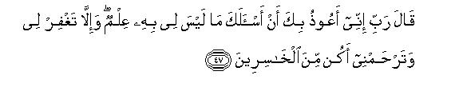
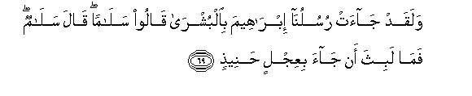
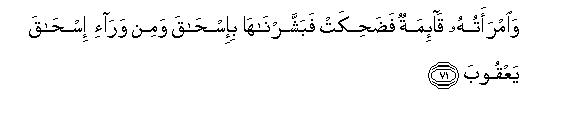

بسم الله الرحمن الرحيم
Sayyid Abul Ala Maududi - Tafhim al-Qur'an - The Meaning of the Qur'an
 11.
Surah Hud
11.
Surah Hud
This Surah has been named after Prophet Hud whose story has been related in vv. 50-60.
If we consider its theme deeply, we come to the conclusion that it was revealed during the same period as Surah Yunus and most probably followed it immediately.
The Surah deals with the same subject as Surah Yunus, that is, invitation to the Message, admonition and warning, with this difference that the warning is sterner. This is also supported by a Tradition:
It is related that after its revelation, once Hadrat Abu Bakr said to the Holy Prophet, "Of late I have been noticing that you are growing older and older. What is the cause of it?" The Holy Prophet replied, "Surah Hud and the like Surahs have made me old." This shows that it was a very hard time for the Holy Prophet and these stern warnings added greatly to his anxieties that were caused by the persecution from the Quraish, who were doing their worst to crush down the Message of Islam. For it was obvious to the Holy Prophet that the last limit of the respite given by Allah was approaching nearer and nearer and he was afraid lest the term of the respite should expire and his people be seized by the torment.
The invitation is this: Obey the Messenger of Allah; discard shirk, and worship Allah and Allah alone: establish the entire system of your life on the belief that you shall be called to account in the Hereafter.
The admonition is this: Remember that those people who put their faith in the outward appearance of this worldly life and rejected the Message of the Prophets met with dire consequences. Therefore you should consider it seriously whether you should follow the same way that history has proved to be the path to ruin.
The warning is this: You should not be deluded by the delay in the coming of the punishment: it is because of the respite that Allah has granted you by His grace so that you might mend your ways: if you do not make use of this opportunity, you shall be inflicted with an inevitable punishment that will destroy you all except the Believers.
Instead of addressing the people directly, the Quran has used the stories of the people of Noah, Hud, Salih, Lot, Shu'aib and Moses to achieve the above mentioned objects. What is most prominent in their stories is that when Allah passes His judgment on the people, He does not spare anyone whatsoever, even if he be the nearest relative of the Prophet of the time. Only that one is rescued who had believed in the Prophet, and none else, not even his own son or wife. More than that: the Faith demands from each and every Believer that he should totally forget his relationships when that judgment comes and remember only the relationship of the Faith. For it is against the spirit of Islam to show any regard whatsoever for the relationships of blood and race. And the Muslims demonstrated these teachings practically in the Battle of Badr, four years after the revelation of this Surah.

In the name of Allah, the Compassionate, the Merciful.
[1-4] Alif Lam Ra. It is an Edict1 whose contents have been made firm and issued in detail2 by the All-Wise and All-Aware: (it is this): "You should worship none but Allah-I am indeed a warner and also a bearer of good news from Him to you-And you should ask forgiveness of your Lord: then return to Him and He will provide you with good provisions of life till an appointed term.3 And He will bestow His favors on everyone who deserves His favors.4 But if you turn away I am afraid you shall meet with the torment of a dreadful day. To Allah you shall all return and He has power over everything."
[5-6] Behold! They turn aside their chests in order to hide themselves from him.5 Beware! Even when they cover themselves with clothes Allah knows alike what they conceal and what they show; indeed He knows even the secrets they conceal in their breasts. There is no moving creature on the earth whose sustenance does not depend on Allah: He knows its dwelling place and its repository.6 Everything has been recorded in an open register.
[7-8] And it is He Who created the heavens and the earth in six days-whereas before this His Throne rested upon water7 so that He may test which of you does the best deeds.8 Now O Muhammad, if you tell them "You will, O people, be raised again after death," those who disbelieve promptly exclaim, "This is plain sorcery!"9 And if We defer their punishment to some definite and reckoned time, they say, "Well, what is it that is delaying this?" Listen! When the day of that punishment comes, no one shall be able to avert it from them, and that very thing which they are ridiculing shall encircle them on all sides.
[9-11] If We show man Our mercy and then deprive him of it, he is filled with despair and shows ingratitude. And if after the adversity that had visited him. We bestow favors upon him, he says, "All my sorrows have gone from me," and grows over-jubilant and arrogant.10 Only those are free from this, who are steadfast11 and do good deeds: they are the ones who will have forgiveness and a rich reward.12
[12] So O Prophet, be on your guard lest you should omit (to recite) some of the things which are being revealed to you and be not distressed at heart that they would say Why has no treasure been sent down to Him?" Or "Why has no angel come with him?" You are only a warner and Allah has everything in His power and charge.13
[13-14] Do they say, "He has invented the Book himself?" Say to them "Very well, if it is so, bing ten fabricated Surahs like this: and you may has been revealed with Allah's knowledge and that there is no true deity other than Allah. Do you then surrender to this (which is the very Truth)?14
[15-16] Those who desire this worldly life and its splendors15 are given the full reward of their works here and nothing is detracted from it. But there is nothing except the Fire16 for them in the Next World. (There they shall come to know) that all that they did in this world had come to naught and whatever they did was useless and worthless.
[17] Can it happen that he who takes his stand on a clear evidence from his Lord,17 subsequently followed by a witness from Him (in his support),18 and prior to that the Book of Moses was revealed as a guide and a mercy, (would even he deny the truth in the manner of those who adore the life of this world)? Rather, such men are bound to believe in it.19 The Fire shall be the promised resort of the groups that disbelieve. So be in no doubt about it for this indeed is the truth from your Lord although most people do not believe.

[18-24] And who can be more unjust than the one who ascribes false things to Allah?20 Such persons shall be brought before their Lord and the witnesses will say "These are the people who ascribed false things to their Lord." Beware! Allah's curse rests upon the unjust people21 -on those unjust people22 who debar others from Allah's Way and seek to make it crooked;23 and who disbelieve in the Hereafter. They were unable to frustrate Allah on the earth,24 nor had they protectors to defend them against Allah. Now they shall be given double chastisement:25 for they would neither listen to others nor see the Truth for themselves. These are the people who brought about their own loss and all that they had invented vanished from them.26 No doubt they shall be greatest losers in the Hereafter. As regards those who believed and did righteous works and dedicated themselves exclusively to their Lord most surely they shall be the dwellers of Paradise and shall abide there for ever.27 These two groups may be likened to two men, one of whom is blind and deaf, and the other can see and hear. Can they be alike and equal?28 Do you not learn a lesson( from this example)?
[25-31] And such was the state of affairs when) We had sent Noah to his people.29 (He said,) "I warn you plainly not to worship anyone but Allah: otherwise I am afraid that a fearful torment shall visit you one day."30 In answer to this, those chiefs of his people, who had rejected his Message, said, "We see that you are no more than a mere man like ourselves,31 and we also see that only the meanest from among us have become your followers without due consideration,32 and we find nothing in you that might give you superiority over us.33 Nay, we consider you to be liars. " He replied, "O my people, just consider it yourselves: If my Lord had sent a clear Sign to me and then bestowed His special blessing on me,34 but you did not see it, how can we compel you to accept that, when you are averse to it ? O my people, I do not ask of you any wealth for this work:35 for I look only to Allah for its reward. And I am not going to drive away those who have believed in me. Indeed they are going to meet their Lord,36 (Who knows their worth). But I see that you are adopting the attitude of ignorance. And, O my people, who will help save me from Allah, if I drive them away? Don't you understand this simple thing? And I do not say to you that I possess treasures from Allah: nor do I say that I have the knowledge of the unseen: nor do I claim to be an angel:37 nor can I say about those whom you disdain, `Allah has not bestowed on them any good'. Allah knows best what is in their minds: for I shall be unjust, if I utter anything like this.
[32-34] At last those people said, "O Noah, you have already argued with us and argued too much. Now you bring down on us that scourge with which you threaten us, if what you say be true." Noah replied, "Allah will bring down that on you if He will and you have no power to frustrate it. Now, even if I wished to do you some good it cannot profit you even if I wanted to be your well wisher, when Allah has decided that you should go astray:38 He is your Lord and to Him you shall return.
[35] O Muhammad! do they say, "He himself has forged all this?" Say to them, "If I have forged this myself, I shall bear all its consequences, and I am clear of the crime you are committing."39
[36-39] And it was revealed to Noah: "No more of your people will believe in you now than those who have already believed. So do not grieve at their misdeeds, but start to build an Ark under Our supervision in accordance with Our Revelation. And beware that you do not plead with Me for those who had been unjust: indeed now they shall all be drowned."40 So he began to build the Ark. And whoso of the chiefs of his people passed by him, he jeered at him. Noah said, "Laugh at us, if you will; we. too, are laughing at you; for soon you shall come to know who is visited by the torment that will disgrace him, and who is afflicted with the inevitable and lasting calamity."41
[40-41] Thus was it until Our Command came to pass and At-Tannur42 began to boil up. Then We said, "Take into the Ark a pair from every species, and embark your own people -save those who have already been specifically marked43 - and also those who have believed;44 and those who had believed with Noah were only a few. Noah said, "Embark in the Ark: in the name of Allah will it move and cast anchor. Surely my Lord is very Forgiving and Compassionate."45
[42-43] As the Ark was moving on with them amid waves like mountains, Noah cried out to his son, who was at a distance, "My son! Embark with us and be not with the unbelievers." He answered, "I am going to climb up a mountain that will protect me from waters." Noah said, "Today there is nothing to protect from Allah's judgment except that He Himself should take pity on anyone." In the meantime a wave came between them and he was among the drowned.
[44] It was commanded, "O Earth! Swallow up thy waters, and O Sky, cease thy rain!" Accordingly the waters sank into the Earth. The decree was carried out; and the Ark rested upon Mount Judi.46 And it was proclaimed: "Gone are the workers of iniquity!"

[45-47] Noah called out to his Lord, saying, "My Lord! My son is of my family, and Thy promise is surely true47 and Thou art the greatest and the best of all rulers." 48 In answer it was said, "O Noah! He is not of your family; he has turned out to be a worthless act.49 So do not ask Me anything of which you have no knowledge. I admonish you that you should not behave like ignorant people."50 Noah meekly replied, "My Lord, I seek Thy protection lest I should ask of Thee anything of which I have no knowledge. For if Thou forgivest me not for my presumption, and hast not mercy on me, I shall be totally ruined."51
[48] It was said, "O Noah, go down:52 Peace and blessings from Us are on you and on the communities that are with you. But there are other communities, whom We shall give the provisions of life for some time: then a painful torment from Us shall visit them."
[49] O Muhammad! These are some of the tidings of the "Unseen" which We are revealing to you. You did not know these before this nor did your people. So practice fortitude, for ultimately, the God-fearing people shall come out successful.53
[50-52] And to `Ad We sent their brother Hud;54 he said. "O my people! Serve Allah: you have no god other than He: it is nothing but falsehood that you have forged.55 O brethren! I do not ask of you any recompense for this service: my recompense is with Him who has created me. Do you not then use your common-sense?56 And O my people, beg forgiveness of your Lord; then turn to }um in repentance. and He will open the gates of the heavens for you and add more strength to your present strength.57 Do not turn away as guilty people."

[53-57] They answered "O Hud! You have not brought us any clear evidence,58 and we are not going to give up our gods at your word, nor are we going to believe in you. We rather believe that some of our gods have smitten you with some evil."59 Hud replied, "I bring Allah's evidence.60 And you should bear witness to it that I have nothing to do with the gods you have set up beside Allah in His Godhead.61 So all of you may do whatever you can against me and give me no respite;62 I have full trust in Allah Who is my Lord and your Lord as well. There is no living creature which He does not hold by its forelock. Indeed straight is the way of my Lord!63 You may turn away, if you will; now that I have conveyed to you the Message with which I was sent to you, my Lord .will raise up some other community in your place and you shall not be able to do Him any harm whatsoever.64 Indeed my Lord keeps watch over everything."
[58] And when Our Command came We delivered through Our Mercy Hud and those who had believed with him and rescued them from a woeful scourge.
[59-60] These are `Ad! They rejected the Revelations of their Lord and disobeyed His Messengers65 and followed every tyrannous enemy of the Truth; so they became accursed in this world and in the Next World as well. Listen! `Ad disbelieved in their Lord! Listen! Cast away were Ad the people of Hud!
[61] And to Thamud We sent their brother Salih.66 He said "O my people! worship Allah: you have no other Deity than He. It is He Who has created you from the earth and made it a living place for you.67 So ask His forgiveness68 and turn to Him in repentance. Most surely my Lord is near at hand and answers prayers.69
[62] They replied "O Salih, till now you were such a person among us of whom we had great expectations.70 What! do you forbid us to worship gods whom our forefathers worshiped?71 Indeed we have a strong doubt about the way to which you are calling us and this has caused a feeling of distraction in us."72
[63-65] Salih said, "O my people! Just consider it yourselves: if my Lord had sent me with a clear Sign and bestowed His special blessings on me who will help save me from Allah if, after this, I become disobedient to Him? You cannot help me any way, but might hasten my ruin.73 And O my people, behold: here is Allah's she-camel, a Sign for you. So let her graze at will in Allah's land, and do not touch her with evil intention, lest a scourge should seize you from your Lord in the near future."
But they killed the she-camel. At this Salih warned them, "Well, you have only three more days to enjoy yourselves in your houses. This is a time limit that will not prove false."


[66-68] So when Our judgment came to pass, We delivered through Our mercy Salih and those who had believed with him, and kept them safe from the ignominy of that Day.74 Indeed your Lord is All-Mighty and 'All-Powerful. As regards those who were iniquitous, a dreadful shock overtook them and they lay lifeless and prostrate in their homes, as if they had never flourished there. Listen! Thamud disbelieved their Lord. Listen! Cast away were Thamud.


[69-73] And lo, Our Messengers came to Abraham with good news. They said, "Peace be upon you." Abraham answered, "Peace be also upon you." And before long he brought a roasted calf for them.75 But when he saw that they did not stretch out their hands towards it, he had a mistrust about them and felt a fear of them76 in his heart. They said, "Don't have any fear: for we have been sent to the people of Lot."77 And his wife was standing by; hearing this, she laughed.78 Then We gave her the good news of Isaac, and after Isaac of Jacob.79 She said, "Woe is me!80 shall I bear a child now when I have grown extremely old, and this husband of mine has also become old?81 This is indeed a strange thing." The angels said, "What! Are you surprised at Allah's decree?82 O people of Abraham's household! Allah's mercy and blessings are upon you. Indeed Allah is worthy of all praise and glory."
[74-76] So when Abraham's fear was allayed and his heart was filled with joy (because of the good news of a child), he began to dispute83 with Us concerning the people of Lot, for Abraham was tender-hearted and merciful and always turned to Us. (At last Our angels said to him), "O Abraham, desist from this now that your Lord's decree has been issued and the scourge which cannot be averted by anyone shall overtake them."84
[77-80] And when Our Messengers came to Lot,85 he was greatly perturbed and distressed in mind because of their visit and said, "This is a day of woe!"86 (No sooner did the visitors come to him than) his people spontaneously rushed towards his house, for they had previously been addicted to wicked deeds. Lot said to them, "O my people, here are my daughters, who are purer for you.87 So fear God and don't degrade me by committing evil to my guests. what ! Is there not a single good man among you ?" They replied, "You know it well that we have no need of your daughters,88 and you also know what we want. " Lot cried, "I wish I had the power to set you right or I could find some strong support for refuge."
[81] Then the angels said, "O Lot, We are messengers sent by your Lord. They shall not be able to do you any harm. So depart from here with the people of your household in the last hours of the night. And look here: none of you should turn round to look behind;89 but your wife (who will not accompany you) shall meet with the same doom as they.90 The morning has been appointed for their destruction-the morning has almost come."
[82-83] Accordingly, when the time of the execution of judgment came, We turned the habitation upside down and rained on it stones of baked clay,91 and each one of these stones had been specifically marked92 by your Lord. And such scourge is not far from the workers of iniquity.93
[84-86] And to the people of Madian, We sent their brother Shu`aib.94 He said. "O my people, serve Allah: you have no deity other than He. Do not give short measure and weight. Though I see you now in a state of prosperity, I fear for you the scourge of a day that will encircle you. And, O my people, give full measure and weight justly and do not defraud people of their goods, and do not spread mischief in the land. The residue (after giving full measure) left over by Allah is best for you, if you are believers. Anyhow I am not a guardian over you."95
[87] They replied, "O Shu`aib! Does your Salat teach you this96 that we should give up all those deities whom our forefathers worshiped or that we should have no right on our goads to dispense with them as we please?97 Indeed you are the only generous and righteous man (remaining in the land)!"
[88-90] Shu`aib said, "O my people! Just consider it yourselves if I had a clear evidence from my Lord, and then had been bestowed good provisions98 from Him, (how can I, then, be a party to your evil and unlawful practices?") And I do not want at all to commit those evil practices, which I forbid you.99 I desire only to reform you as far as it lies in my power. And this work of mine depends entirely on Allah's help: and in Him I have put my trust and to Him I turn for everything. And O my people, let not your obduracy against me be conducive to bring upon you the doom that overtook the peoples of Noah, Hud and Salih. And the people of Lot are not far from you.100 Listen! Ask forgiveness of your Lord and turn to Him in penitence. Indeed my Lord is Merciful and loves His Creation."101
[91] They answered "O Shu`aib! We do not understand much of what you say.102 Indeed we see that you are a powerless man among us. Had it not been for your family, we would have stoned you to death long before this, for you are not strong enough to prevail over us."103
[92-93] Shu`aib said, "O my people! Do you regard my family to be more powerful for you than Allah (that you are afraid of it) but have disregarded Him totally? Note it well that whatever you are doing is within Allah's grasp. O my people, you may go on following your way and I will follow my way. You will come to know in the near future who shall be visited by an ignominious scourge and who is the liar; wait if you will and I, too, shall wait with you."
[94] And when Our decree came to pass, We delivered through Our mercy Shu`aib and those who had believed with him. As regards those who were iniquitous, a dreadful shock overtook them and they lay lifeless and prostrate in their homes as if they had never flourished in them.
[95] Listen! Cast away were also the people of Madian as were Thamud cast away.
[96-99] And We sent Moses with Our Signs and a manifest authority of appointment to Pharaoh and the chiefs of his kingdom. But they followed the command of Pharaoh and unrighteous was Pharaoh's command. On the Day of Resurrection, he will head his people and lead them to Hell.104 What a wretched goal for one to reach! Curse has fallen on them in this world and shall also fall on them on the Day of Resurrection. What an evil reward for one to receive!
[100-101] This is the story of some of the habitations We are relating to you: some of these are still standing while the others have been brought down. We were not unjust to them but they were unjust to themselves. And when the judgment of your Lord came to pass, those deities of theirs, whom they worshiped instead of Allah, availed them not at all: they only hastened their ruin. They did them no good but caused their destruction and ruin.
[102-108] And when your Lord seizes a sinful town, He seizes it like this: indeed His seizure is very terrible and painful. In fact, there is a Sign in this for everyone who dreads the Torment of the Hereafter:105 that will be the Day when all the people shall gather together and will witness everything that will happen there. We are deferring that only for a fixed term. When that Day will come, no one shall dare speak a word except with Allah's permission106 Then some people shall be damned, while others blessed. Those who shall be damned shall go to Hell: here they will pant and hiss (because of thirst). Therein they shall abide for ever as long as the earth and the heavens shall last107 unless your Lord ordains otherwise. Indeed your Lord has full powers to do as He will.108 As for those who shall be blessed they will go to the Garden and dwell therein for ever as long as the earth and the heavens shall last, unless your Lord wills something else.109 They will be blessed with a boon that will be imperishable.
[109] So, O Prophet have no doubt concerning the deities they worship for they blindly imitate and worship what their forefathers worshiped before them.110 And We will give them the full measure of their share without detracting anything from it.
[110-115] We gave the Book to Moses also before this and there arose differences regarding this ( just as they are arising regarding the Book We have given to you.111) If a decree had not .been made beforehand by your Lord, a judgment would have been passed long before this on those who have created differences.112 It is a fact that they are in doubt and uncertainty about this, and it is also a fact that your Lord will give them full measure for their deeds, for He is fully aware of what they are doing. So, O Muhammad, you and your companions, (who have turned back from unbelief and rebellion to Faith and obedience), should stick firmly to the Right Way, as you have been enjoined, and should not transgress the bounds of submission. Allah is watching over what you are doing. Do not incline even in the least towards the workers of iniquity lest you should come within the reach of the Fire. Then you will find no protector to defend you against Allah nor will you get any help from any quarter. And listen! Establish Salat at the two ends of the day and in the early part of the night.113 Indeed virtues remove evils. This is a reminder for those who remember Allah.114 And practice fortitude, for Allah does not let go waste the reward of those who do good.
[116-119] Then, why were there not among the communities before you such righteous persons who should have forbidden the people to make mischief in the land? If there were any, they were very few whom We saved from among those communities. The wrong-doers, however, pursued their worldly pleasures for which they had been abundantly provided, and became confirmed criminals. Your Lord is not such a One as to destroy the habitations without just cause, the while their inhabitants are doing right.115 Your Lord could have made mankind one community had He so willed, but now they will continue to follow different ways but only those on whom Allah has His mercy (escape wrong ways). It will be so because He has created them for this (very freedom of choice and action).116 And the word of your Lord, that He will fill the Hell with Jinns and human beings, has been fulfilled.
[120] And, O Muhammad, We relate the stories of the Messengers to you to strengthen your heart by these. And you have received the knowledge of the reality through these and the Believers have got an admonition and a reminder from them.
[121-123] As regards those who do not believe, say to them, "You may go on following your way and We will follow our way. You may wait for its ultimate end, and we, too, will wait for it." Everything that is hidden in the heavens and the earth is in the power of Allah and everything shall return to Him. So, O Prophet, serve Him and put your trust in Him, for your Lord is not unaware of what you are doing.117
1The Arabic word (kitab) has been translated into "Edict" because of the context. For its meaning is not confined to "book" or "something written" but it includes "command" and "sovereign decree" as well and has been used in several places in the Qur'an in the same sense.
2The contents of this "Edict" are firm, strong, and unchangeable: they are well-balanced and measured: there is no tinge of verbosity, pedantry. volubility, poetic fancy and rhetorical exaggeration. The truth has been stated accurately, and there is nothing more and nothing less than the truth. Moreover. the contents have been given in detail and everything has been made so clear and plain that there is neither confusion nor complication nor ambiguity in it.
3The assurance that "He will provide you with good provisions of life. . . " has been given to remove the misunderstanding which Satan has imbued in the heart of every foolish worshiper of the world that piety ruins one's worldly life, though it might lead to one's success in the Hereafter. Allah has re-assured the true believers that He will shower His blessings on God-fearing people and they will live happy and peaceful lives and will be honored and respected everywhere. The same thing has been stated in a different manner in XVI: 97: "Whoso will do good deeds, whether a man or a woman, provided the one is a believer, We will surely make such a one lead a pure and clean life in this world." Allah has refuted this theory of Satan and his disciples that piety inevitably brings poverty, distress and affliction and ignominy to the person who adopts truth, righteousness and virtue. He has assured that He will make the life of the one who will believe in Him and adopt a righteous life truly successful both in this world and in the Hereafter. And it is common experience that only those people enjoy real peace of mind and are honored and respected who are God-fearing and possess a pure character; who are fair and generous in all their affairs and dealings and who are free from evil. For they are trusted by all and none fears any wrong or wickedness from them.
According to the Qur'an, the provisions of life are either "good provisions" or "deceptive provisions." Here those, who return to Allah, have been assured that they will be given "good provisions" of life and not "deceptive ones". The provisions are "good" if their recipient becomes even more grateful to Allah than before and uses these for fulfilling His rights and the rights of mankind and of his own self. Such "good provisions" snake his life truly successful in this world and also in the Next World. On the contrary, the provisions are "deceptive", if they become a temptation for the recipient, and get him involved in the worship of the things of this world more than before. Though "the deceptive provisions" might appear to be a blessing and a "favor", these are, in fact, a curse and means of some future torment.
4This verse enunciates a fundamental Divine Principle. The higher a person rises in character and conduct, the higher is the rank he obtains in the sight of Allah. That is to say that Allah does not let go waste the good deed of anyone. He does neither appreciate any evil deed, nor detracts from any good deed. Everyone will be given the honor which he deserves for his deeds.
5They were those people of Makkah, who though not very active in their antagonism against the Message of the Holy Prophet, nevertheless were very averse to it. Therefore they did not like to hear it nor come face to face with him, and did their very best to avoid him. If, by chance, they found him sitting somewhere and talking to the people, they would at once turn back on their heels. Or if they saw him coming towards themselves they would slink away or hide their faces with cloth for fear that he might address them and convey his Message to them. As they did not have the courage to face the. Truth, they would bury their heads ostrich-like and make believe that the Reality from which they were hiding had disappeared, whereas it was all along there and watching their ridiculous attempts to hide from it.
6That is, "It is foolish on your part to deceive yourselves that you can escape punishment by hiding yourselves from Allah Who has full and perfect. knowledge of everything: Who knows the nest where the tiniest sparrow lives and the hole where the smallest insect resides, and provides their sustenance to them wherever they be: Who knows the dwelling place and the final resting place of every creature and gives life and death to them at the appointed time. Do you think that by hiding yourselves from His Messenger, you can also hide yourselves from the All-Knowing Sovereign Who has sent him? Do you think that Allah does not see His Messenger doing his very best to convey His Message to you and you are trying to turn a deaf ear to it?"
7This is a parenthetical clause that has probably been inserted in answer to a question, which has not been cited: if the heavens and the earth were created afterwards in six days, what was there before their creation? The answer is: then there was water. It is not possible for us to say what exactly was the nature of that water. It might have been the common fluid known by that name. Or perhaps, the word "water" has been used as a symbol for the fluid state of the matter before it was changed to its present form. As regards "His Throne rested on water," I am of the opinion that it means: "His Kingdom was over water."
8This enunciates the purpose of the Creation: Allah created the heavens and the earth for the sake of the creation of mankind and He created mankind to rest human beings by delegating to them the powers of vicegerency and making them morally responsible for using or abusing them, just as they liked. Thus it has been emphasized that the sole purpose of the Creation is the moral trial of man and his consequent accountability to the Creator for the use or abuse of the delegated powers, and the award of rewards and punishments. For without this basic purpose, the whole work of Creation would have become meaningless and useless.
9That is, "The disbelievers very foolishly considered the purpose of the Creation to be no more than a pastime in which they themselves were mere playthings. They were so absorbed in their foolish conception that when the Holy Prophet told. them what the real purpose of Creation was and what part they were required to play in it, they would scoff at him, saying, "Your Message is like a piece of sorcery and beyond our understanding."
10This disgraceful characteristic of man has been mentioned here because the disbelievers were exhibiting it at that time. When the Holy Prophet warned them of the consequences of their disobedience to Allah, they would scoff at hire as if to say, "Arc you mad? Can't you see our prosperity and power? We are enjoying all the good things of life and dominating over everything and everyone all around us. How is it that you are prophesying torment for us?"
The above-mentioned arrogant behavior was due to the disgraceful human characteristic which has been mentioned in this verse. It is this: Man is, by nature, shallow and superficial and lacks the depth of thought. Therefore, when he enjoys prosperity and power he becomes joyous, arrogant and boastful; so much so that he never even dreams of any possibility that his happy condition would ever come to an end. And if and when adversity befalls him, he becomes an embodiment of despair and begins to complain of his misfortune here, there, and everywhere; so much so that he does not hesitate even to abuse God and taunt at His Godhead. But whenever there is a change for the better in his fortune, he again begins to brag of his foresight, wisdom and success. That is why the disbelievers were exhibiting such a shallow and superficial characteristic in answer to the warning of the Holy Prophet. They forgot that Allah was deferring their punishment because of His mercy to give them sufficient time to consider well their absurd attitude and mend their ways during the respite given to them, and not to delude themselves by imagining that their prosperity had very deep foundations and would last for ever.
11Here (sabr) (fortitude) implies another meaning also, that is, "steadfastness" the antonym of shallowness etc., that has been mentioned in the preceding verse. Those "who are steadfast" remain fine and unwavering in their purpose in spite of the vicissitudes of life. They are not influenced by the changes of circumstances, but stick to the right, reasonable and correct attitudes they have adopted. They do rot give themselves airs nor become intoxicated nor over-jubilant and boastful, if they win power, prosperity and name. On the contrary, they are neither subdued nor depressed if they are visited by adversity. In short, they come out successful in their trial by Allah, whether it be in the shape of favor or adversity and remain steadfast in both the cases.
12This is the favor that Allah shows to such people; He forgives their shortcomings and gives them rich rewards for their good deeds.
13In this verse, Allah has comforted and urged His Messenger to propagate the Message without the least hesitation and not to waver in his determination for fear of ridicule or for lack of response from his people. He should convey the Message in its entirety and leave the result to Allah for He has full power over everything. In order to grasp its full significance, we should keep in view the circumstances that necessitated it.
At the tune of this Revelation, the Quraish were the most powerful and influential of all the clans. As they were the guardians of the Ka'abah (Makkah), the religious center of the Arabs, they enjoyed religious, economic, and political superiority over the whole of Arabia. Thus it was quite natural that they should resent and oppose that Message which proclaimed, "The religion of which you arc the leaders is absolutely false, and the system of life you are following is rotten to the core. As you are rejecting the Message, torment of Allah is threatening you. The only way of escape from it is that you should accept the Right Way and the righteous system of life I have brought from Allah." Obviously this Message struck a hard blow at their "superiority" and therefore they were averse to it from the very beginning.
The second reason why they did not accept it was that the Messenger possessed nothing extraordinary to convince the people of his Prophethood except his pure character and his rational, and understandable Message. Then for the Quraish, there was nothing to warrant a torment from Allah except the rotten condition of their religion, morality and culture. On the contrary, there was "prosperity" to delude them that that was a sure sign of the favors of Allah and of their "gods" and "goddesses", which was a clear proof that the ways they were following were the "right" ways. The inevitable result was that only a small minority of those people, who had sound minds and hearts, accepted the Message and the remaining large majority became hostile to it. Then some of them tried to suppress the Message by persecutions and some did their worst to defame it by false accusations and frivolous objections and others resorted to calculated indifference to discourage it. There were still others who adopted an attitude of ridicule, derision, taunt and mockery in order to make light of it.
The above condition went on for many years and was liable to fill one with despair and discouragement. Therefore the Sovereign reassured His Messenger, as if to say, "We disapprove of these shallow, superficial and mean people, who are trying to make your mission a failure by their prejudice, indifference, ridicule, mockery and frivolous objections. You should go on following the Right Way with perseverance and courage: you should go on proclaiming the Truth that has been revealed to you without the least hesitation: you should never be afraid of propagating the Message for fear of ridicule or indifference: you should go on inculcating the Truth in its entirety whether anyone accepts it or rejects it for it is Allah Who has everything in His power and charge and He alone affords guidance to everyone He considers fit for it."
14Here one and the same argument has been advanced to prove two things. First, the Qur'an has been revealed by Allah. Secondly, it proves the truth of the doctrine of Tauhid. The argument is this:
(1) "You say that the Qur'an has not been revealed by Allah but has been devised and invented by my self and ascribed to Him. If your claim had been genuine you would have been able to invent a book like this in answer to the challenge I have given you over and over again. As you have failed to do so even with your combined resources and forces, my claim that it has been revealed with Allah's knowledge has been proved absolutely, fully and completely."
(2) "Then there was a two-fold challenge from the Qur'an to your deities but they utterly failed to meet it. They were challenged to come to your aid and help produce a book like the Qur'an. As they have not helped you, it is a clear proof that they are absolutely powerless and have no share at all in Godhead. You have seen that they have not only failed in this decisive test, but have also proved to be impotent to defend themselves against the open attacks made on them in this Book, which asks the people not to worship them for they have no share in the powers of Godhead. These things have proved that there is nothing Divine in them and you have made them your deities without rhyme or reason".
Incidentally, this verse shows that chronologically this Surah was revealed earlier than Surah Yunus. For at first they were challenged in this Surah to bring ten Surahs like the Surahs of the Qur'an, but they failed to do so. Then in Surah Yunus they were challenged (v. 38) to bring even one Surah like this. (X: 38 and E.N. 46).
15This general statement has been made in continuation of the theme of the preceding verses, to refute the false excuses of the disbelievers mentioned therein for rejecting the Message of the Qur'an. This verse says that in general those people who rejected the Qur'an then (and are rejecting it now) were the worshipers of this world and its pleasures. As the root cause of their rejection was (and is) this false creed that there is nothing more valuable than the pleasures of this world and its material gains, there should be no restrictions (like the ones imposed in the Qur'an) on their acquisition. They first made this choice, and afterwards invented arguments (like the ones mentioned in the Qur'an) to deceive their own minds and those of others.
16This is a clear and stern warning to the worshipers of the world. They should know that they will get the full reward for the exertions (whatever they be) they put forth in order to acquire the worldly gains but they should note it well that they would get nothing in the Next World. As they confined their efforts to the benefits of this world, and did nothing to earn the benefits of the Next World, they should expect nothing for the deeds they have done for the material gains of this world. In order to illustrate this, let us take the case of a person who desires to build a palace for himself in this world and adopts all those devices, measures and means which help build such a palace. Most surely, he will succeed in building a grand palace, for no brick will refuse to stick to its place simply because he was an unbeliever. But it is equally obvious that he shall have to leave behind in this world that grand palace along with all its furnishings as soon as he breathes his last breath. For there is no reason why the palace he had built (or done anything else) for this world, should be credited to him in the Next World, if he had done nothing to provide himself with a palace in the Next World. For only those who provide for themselves with the necessary material for a palace in the Next World in accordance with the Divine Law, deserve to get a palace there.
Now a question arises in regard to the logical conclusion of this argument, according to which he should not get a palace in the Next World. It is this: "Well, he may not get a palace, but why should he be thrown into the Fire of Hell? The answer is this (and the Qur'an itself has given this same answer in different places) that the one who exerts and works only for a palace in this world in utter disregard of the Hereafter, naturally and inevitably adopts such treasures and means as help build a large Fire for himself in the Hell. (Please refer to E.N. 12 of Yunus.)
17This shows that even apart from revelation, there is ample evidence in man's own self, in the structure of the heavens and the earth, and in the order that prevails in the universe to prove that God is the only creator, master, lord and sovereign of the universe. The evidence referred to above also inclines man to believe that the present life will be followed by another one in which man will be required to render an account of his deeds and wherein he might be requited.
18The 'witness from Him' is the Qur'an. The testimony of the natural phenomena combined with that provided by man's own self had already created in man the disposition to affirm the truths mentioned earlier. All that was further reinforced by the Qur'an which came as reassurance that what he was predisposed to believe in was indeed true.
19In the present context the verse means that those who are overly infatuated with the allurements of a worldly life will be inclined to reject the message of the Qur'an. Distinguishable from these are those who take full note of the testimony furnished by their own beings and by the structure and order prevailing in the universe in support of God's unity. This testimony was further reinforced by the heavenly books revealed before the Qur'an. How could such persons close their eyes to such overwhelming testimony as this and join their voice with those of the unbelievers?
This verse clearly indicates that even before the Qur'an was revealed, the Prophet (peace be on him) had reached the stage of belief in the Unseen. We have seen in al-An'am (see 6: 75 ff.) the case of Abraham. Before being appointed a Prophet, Abraham (peace be on him) was led by a careful observation of the natural phenomena to knowledge of God's unity. Likewise, the present verse makes it clear that by his reflection, the Prophet (peace be on him), had been led to believe in the Unseen even before the Qur'an was revealed. Subsequently, when the Qur'an was revealed it not only confirmed what he had already become inclined to accept, but also provided definite knowledge about it.
20To invent a lie against God consists of stating that beings other than God also have a share with God in His godhead, that like God they are also entitled to be served and worshiped by God's creatures. Inventing a lie against God also consists of stating that God is not concerned with providing guidance to His creatures, that He did not raise Prophets for that purpose, and that He rather left men free to behave as they pleased. Inventing a lie against God also consists of stating that God created human beings by way of jest and sport and that He will not have them render an account to Him, and that He will not requite them for their deeds.
21Such a proclamation would be made on the Day of Judgment.
22This is a parenthetical statement. That is, that God's curse will be proclaimed in the Hereafter against those who are guilty of the crimes mentioned.
23Such persons do not like the Straight Way being expounded to them. They would rather have the Straight Way rendered crooked by altering it under the influence of lust, prejudice, fancy, and superstition. It is only after the way that was once straight has been rendered crooked that they will be willing to accept it.
24This, again, refers to what will happen in the Next Life.
25They will suffer punishment for being in error and for misleading others and leaving behind a legacy of error and misguidance for coming generations. (Al-A'raf, note 30}
26All their conjectures regarding God, the universe and their own selves will prove to be absolutely baseless in the Next Life. Similarly, the notions they entertained about the help and support they would receive from those they considered to be either their deities, or their intercessors with God, or their patrons will prove to be false. Likewise, it will become obvious that all their notions about the After-life were utterly untrue.
27This concludes the account about the Hereafter.
28Can the attitude and ultimate end of both these types of people be the same? Obviously, he who fails to see the right way and ignores the instruction of the guide who directs him to the right way will necessarily stumble and meet with some terrible mishap. However, he who perceives the right way and follows the instructions of his guide will reach his destination, and reach it safely.
The same difference is found between the two parties mentioned here. One of these carefully observes the realities of the universe and pays heed to the teachings of God's Messengers. The other party, however, neither uses their eyes properly to perceive God's signs, nor pays heed to His Messengers. The behavior of the two parties is, therefore, bound to be different. And when their behavior is different, there is no reason to believe that their ultimate end will be identical.
29E.N.'s 47-50 of Al-A'araf should be kept in view.
30This is the same thing that has been put into the mouth of Muhammad (God's peace be upon him) in vv. 2-3.
31The same foolish objection was being raised by the people against the Holy Prophet. They argued like this: "You are a man like you eat and drink, walk and sleep and have a family like us, and there i in you that might show that you have been sent by God. " (See E. N . XXXVI).
32The "big" people of Makkah passed the same remarks about those who followed the Holy Prophet. They taunted him with things like these: "Your followers consist of mere inexperienced boys or slaves or the lowest strata of society, in short, of such people as are credulous and lack commonsense and wisdom." {Please refer to E.N.'s 34-37 of Al-An`am and E.N. 75 of Yunus).
33This is to say, "You claim that you are the favored ones of God Whose blessings are on you, and that those who do not follow your way are under His wrath. But the reverse of this is true for it is we who have been favored with wealth, servants and power and you possess nothing of the sort. Please point out anything in which you are superior to us."
34This is the same thing that has been put into the mouth of the Holy Prophet in v. 17. That is, "At first I recognized the reality of Tauhid by observing keenly the Signs of God in the universe, and in my own self. Then the same was confirmed by Revelation to me" . This shows that all the Prophets acquired the knowledge of the "Unseen" by observation and contemplation. Then Allah blessed them with the actual knowledge of the same at the time of their appointment as Prophets.
35This was to bring home to them the fact that he had no selfish motive in the performance of his mission, as if to say, "I am conveying the admonition to you without any demand or hope or expectation of worldly gains. Nay, I am bearing all the sufferings in the hope that you may at last realize that I have no ax to grind. And you cannot point out anything to show that I have any personal or selfish interest before me in the mission of the Message". (See. E.N. 70 of XXIII, E.N. 17 of XXXVI and E.N. 41 of XLII).
36That is, "Their true worth will be known only when they shall meet their Lord. Therefore it is not proper for you to treat them with contempt here in this world. Maybe they are precious stones-their Lord alone knows-and you are treating them as mere worthless stones". (See VI: 52, XVIII: 28).
37This is the answer to their objection that he was no more than a man like themselves. Prophet Noah admitted this: "In fact I am a man and I never claimed to be more than this. My only claim is that God has shown me the Right Way of knowledge and action and you are welcome to test this in any way you like. But instead of this, you are asking me questions about the "Unseen", though I never claimed to have its knowledge. You ask me to produce such things as can be produced only by that person who possesses God's treasures and I never claimed to possess them. You object that my physical life is like that of other men, though I never claimed that I was an angel and not a man. The true test of my claim is that you should ask me about the true creeds, the principles of morality and culture and not about frivolous things about the future events for I never claimed to possess their knowledge."
38That is, "All my efforts to do good to you cannot prove effective, if Allah has decided to withhold the right way from you because of your obduracy in evil and the lack of interest in good ways. For Allah lets people go astray on the way they choose for themselves."
39The wording of the verse shows that during the recital of the story of Prophet Noah, the opponents of the Holy Prophet might have felt that he himself had invented that story in order to hit them hard indirectly. So they might have interrupted him, saying, "You are inventing such stories as these in order to apply these to us and hit us hard indirectly." That is why the narration of the story has been broken to answer their false accusation.
And the fact is that the mean people always behave like this: As they have no interest in goodness, they would turn to the dark side of everything. Even if one gives them wise counsel or teaches them a useful lesson or warns them of an error, they would never benefit from these nor mend their ways. Instead of this, they would search out for that aspect of the matter which will not only undo the wisdom and goodness of the counsel but also bring an accusation against the admonisher. It is obvious that in this way, even the best of counsels can be made ' void and ineffective, if the hearer dubs that as a "hit," and takes it ill as an affront. Moreover, their thinking is always based on suspicion and mistrust. Supposing there is a certain story which appears to be true. A wise man will take it as a fact and learn a lesson from it, even if it applies exactly to his own condition and points out his error. On the contrary, a suspicious and crooked man will at once jump to the conclusion without any proof at all that the story had been invented for the sole purpose of applying it to him in order to hit him hard.
The same was the condition of those who accused the Holy Prophet that he himself had forged the story and ascribed it to Allah to make it more effective. Allah has asked him to say to them, "If I have forged the story, I shall have to bear its consequences, but this cannot lessen the punishments of the crimes you are committing for which you alone will be held responsible. "
40This verse lays down the limits of the Divine Law of respite. When the Message of a Prophet has been conveyed to a people and is rejected, they are granted respite from punishment only as long as there is the possibility that some of them might accept it. But when there remains no such possibility and there is left nothing but evil element among them, Allah does not grant them any further respite. And this is a manifestation of His mercy, just as for the safety of the good fruit the rotten ones should be thrown away and discarded. Conversely, it shall be an act of cruelty to the good people and the future generations, if pity is shown to those wicked people who are incorrigible.
41This is a very appropriate example of the points of view of those who look merely at the surface of things and of others who know the reality about them. It appears that when Prophet Noah was building the Ark on the land, it looked to be a ridiculous act to those wicked people who did not believe in him. They jeered at him as if to say, "Just see the madness of the old man! He wishes to float a ship on the land!" For they could never imagine that after a few days, a ship would actually float there. Therefore naturally they regarded that act of Prophet Noah to be a clear proof of his madness. Probably they might be pointing them fingers at him and the Ark he was constructing, saying to one another, "Have you any doubt now, if you had any before, that he is really a mad man, who is constructing a ship to float on the waterless land?" But the one, who had the knowledge of the reality and who knew that a ship would actually be needed there in the near future, was laughing at their ignorance and lack of knowledge of the real matter and their arrogant self-satisfaction, as if to say, "How foolish these people are! The catastrophe is threatening them overhead but they are not only self-satisfied but also regard me mad, who has warned them of it and who is himself making preparations to meet it." And these are exactly the two ways, in general, of judging the wisdom or folly of things. One man judges an act to be wise by looking merely at the surface, while the other goes down deep into it and knows it to be foolish. Likewise the former considers an act to be foolish and mad while the latter who has the real knowledge of the matter, knows that it is based on wisdom and foresight, and is the very same thing that was required undo the circumstances.
42Different interpretations have been given of this, but we are of the opinion that the correct one is the one that is based on the plain words of the Text. The Deluge started from At-Tannur, a particular oven from under which water began to boil up. At the same time heavy rain began to fall and springs began to gush up water from many places in the earth. This is given in detail in vv. 11-12 of Surah AI-Qamar: "We opened the gates of the sky from which it began to rain heavily and constantly, and We tore open the earth and springs began to gush forth water from every side: Thus the two kinds of water gathered together to fulfill the destined doom."
In this connection, it should also be noted that the prefix (al) (the) before (tannur), oven, shows that a particular oven had been specifically marked by God for the purpose of starting the Deluge. This began to boil up water as soon as it was commanded to do so, and afterwards it began to be called (The Oven). It has been explicitly stated in v. 7 of XXIII that the said Tannur was specified before hand.
43That is, "Don't embark in the Ark those who had specifically been marked as unbelievers from your household, for they do not deserve to be shown Our Compassion. Most probably they were two persons. One was his son who was drowned (v. 43), and the other was his wife: (LXVI: 10). And if there were any others, they have not been mentioned in the Qur'an.
44Incidentally, this refutes the theory of the historians and genealogists who trace the genealogy of the whole human race to the three sons of Prophet Noah. This wrong theory became prevalent because of the stories in the Bible that none other than Prophet Noah, his three sons and his wife were rescued from the deluge. (Genesis 6: 18, 7: 7, 9, and 9: 19). But the Qur'an contradicts this in many places, saying that besides the people of his own household, sane other people of his community, though small in number, were also rescued along with him. Moreover, the Qur'an declares that the generations which came after Prophet Noah were his descendants and of all those people who were rescued in the Ark: "You are the descendants of those whom We bore in the Ark with Noah-- (XVII: 3 ) " . . . . they were from the descendants of Adam, and from the seed of those whom we carried in the Ark with Noah...." (XIX: 58).
45This humility shown by Prophet Noah that his delivery from the Deluge was not due to his own plans, measures and efforts but to the Mercy and Compassion of his Lord, who is most Forgiving, is the true characteristic of a Believer The Servant of God adopts all necessary measures as a man of the world does, but he does not put his trust in those measures alone. Along with these he puts his trust in his Lord for their success, because he knows well that no measure can be adopted without His sanction, nor can it be put into practice nor can it achieve the required object unless it is helped by the Compassion and Favor of Allah.
46According to the Qur'an, the Ark rested upon Mount Judi, which is situated to the North-east of Jazirah Ibn 'Umar in Kurdistan. But according to the Bible its resting place was Mount Ararat in Armenia, which is one of the ranges of mountains of tire same name that extends from Armenia to southern Kurdistan. Mount Judi is one of the mountains of the Ararat range, and is known by the same name even today. The ancient histories confirm that the resting place of the Ark was Mount Judi. For instance, Berasus, a religious leader of Babylonia, who lived about 250 years before Christ, says in his history of the Chaldeans that Noah's Ark rested upon Mount Judi. Abydenus, a pupil of Aristotle, not only confirms the same but also says that many people of `Iraq of his time possessed pieces of the Ark, which they ground in water and gave to the sick as a medicine.
Now let us consider the question: Did the Deluge mentioned here cover the whole earth or was it confined to that particular region where Prophet Noah lived? This is a question which has not been finally settled up to this day. As far as the Bible and the Israelite traditions are concerned, this was universal. (Genesis 7: 18-24). But the Qur'an is silent about it, though it does say things which show that the whole human race after the Deluge was the descendant of Prophet Noah and of those with him in the Ark, but this does not mean that the Deluge covered all the earth. It may be explained like this: at that time of the history the only region of the earth, which was inhabited by the human race, was the region in which Noah lived, and the generations which came after the Deluge, gradually spread over other parts of the earth. This theory is supported by two things. First, there is a conclusive proof that a great flood did come over the land of the Tigris and the Euphrates. This is confirmed by historical traditions, archaeological remains and geological evidence. But there are no such proofs in the other parts of the earth as might show that the Deluge was universal. Secondly, traditions have come down to almost all the peoples of the earth living even in distant places like America and Australia, that once a great flood had come all over the earth. The only conclusion which can be drawn from the above is that at one time the forefathers of all the people of the earth lived at one place. But, when afterwards they spread over different lands in the earth; they carried the traditions of the Deluge along with them. (Please refer to E.N. 47 of Al-A'araf).
47That is, "Thou promised that Thou wilt save the members of my family from this calamity; so save my son for he is also a member of my family."
48That is, "Thou art the greatest of all rulers: therefore Thy decision is final and there can be no appeal against it." And "Thou art the best of all rulers: therefore all Thy decisions are based on perfect knowledge and absolute justice."
49Allah has called the wicked son of Prophet Noah "a worthless act", for children are entrusted by the Creator to the care of parents so that they may bring them up and train them to become "good persons" and fulfill the purpose for which He created man. If a father does his very best to "process" and turn the child into a righteous person, but fails in his efforts, the child, who was a sort of raw material in his hands, would be likened to a "worthless act". It is obvious that the wicked son was a "worthless act", for he was not the sort of "good work" which his father had desired him to be. So in this sense he did not belong to the family of Prophet Noah, whom the Creator had sent to mold all his people into "Good acts", especially those who were of his own flesh and blood. Thus that unrighteous son had forfeited all the rights of blood he had with the Prophet as far as the torment of "the Deluge" was concerned.
Now let us consider the other question: Why was not the request of the Prophet regarding his own flesh and blood granted? The answer is this: If any part of the body of a man becomes so rotten that the surgeon is of the definite opinion that that part must be cut off for the sake of the safety of the rest of the body, the surgeon will not comply with the request of the man not to cut that part of his body, but will say, "It is not a part of your body because it is rotten." This will not, however, mean that it was never actually a part of the body but will imply only this: "As it has ceased to function tightly as a part of the body, it is no more a part of the body in the sense and for the purpose the healthy parts of the body ace its parts" .Likewise, when it was said to Prophet Noah, "He is not of your family," it did not negate the fact that he was from his loins but implied, "He does not deserve to be treated as a member of your righteous family because of his spoiled morals and conduct. As the torment of the Deluge has been brought about to punish those who had sided with the unbelievers in the conflict of kufr and Faith, your son does not deserve to be rescued from it along with the believers. Had it been a conflict between your descendants and those of the unbelievers, the result would have been different, but this being a conflict between the righteous and the unrighteous, the former alone will be delivered from it."
The epithet, "a worthless act", has been purposely applied to the son of Noah, for it is very meaningful. It points to the two different objects that the parents have in view in bringing up their children. Those parents who look merely at the surface of things, bring up and love their children because they are from their loins or their wombs, irrespective of the fact whether they are righteous or unrighteous. But this epithet requires the believers to look upon their children as "pieces of work" entrusted to them in a natural way by their Creator, so that they should prepare and mold them so as to fulfill the object for which Allah has created man. Therefore, if a certain parent fails in his efforts to mold his child in a way to fulfill the very object for which the child was entrusted to him and the latter becomes a servant of Satan instead of his Lord, the parent should regard all his efforts for the child to have gone utterly waste. In that case there is no reason why that parent should have any consideration for that "worthless act".
As a corollary to the above, the same rule will apply to the other relationships of a believer. As a believer is one who believes in certain creeds and behaviors, all his relationships with the other people will be determined by those creeds and behaviors. If his blood relations have the qualities of a believer, their relationship with him becomes doubly stronger. But if they are void of the qualities of a believer; the believer will confine his relationship with them only to the extent of blood relationships and will have no spiritual relationship with them. Consequently, if such a relative comes face to face with the believer in the conflict between kufr and the Faith, the believer should fight with him just as he would with any other unbeliever.
50This warning from his Lord does not mean that Prophet Noah was suffering from the lack of "Faith" or that his Faith had any tinge of weakness or that he had beliefs like those of the ignorant people. His response to this is rather a proof of his high moral character. As Noah was like the other Prophets, a human being, he also suffered from the common human weakness, that is, natural parental love for children. So he begged his Lord to deliver his son from the Deluge. Allah admonished him because the high character of a Prophet demanded that he ought not to have made such a request even for his own flesh and blood. That is why no sooner was the warning administered w him than he realized that he had come down from the high position of a Prophet to the level of a mere father because of the critical psychological human weakness. Therefore immediately after the warning, he repented of his weakness, and behaved as if his own son had not been drowned in the Deluge a moment before this. This character shown by him is a clear proof that he was a true Prophet. He returned to the same height and meekly asked his Lord's forgiveness for showing any concern for his own son who had forsaken the Truth and sided with falsehood.
51The Qur'an has cited the story of the drowning of the son of Prophet Noah to bring home to the people that Allah's decrees are absolutely just and final.
This also served as a warning to the Quraish who considered themselves to be immune from the torment of Allah simply because they were the descendants of Prophet Abraham, and had several gods and goddesses as their interceders. Likewise it was a warning to the Jews and the Christians who cherished, and still cherish, such beliefs, nay, even to those Muslims, who foolishly believe that their saintly ancestors and holy people will guard them against the consequences of the justice of Allah. For the tragic scene depicted here categorically refutes such false expectations and beliefs, saying, "O foolish people ! Why do you cherish such false hopes? When Our Prophet Noah could not save his son who was drowned before his very eyes, and his prayer for the son was not only rejected but he was rebuked for making such a prayer, how can you then expect that anyone much less than a Prophet can deliver you from the justice of Allah?"
52That is, go down from the Mountain on which the Ark is resting.
53That is, "You and your companions will come out successful at the end of the conflict just as Prophet Noah and his companions did. For this is the Divine Law that those who exert for the right cause, avoiding erroneous ways for fear of Allah, should come out successful in the end, even though they should meet with failures in the beginning of the conflict at the hands of the enemies of the truth. Therefore you should patiently bear the afflictions which you are suffering and stand steadfast against the obstacles you are encountering in the way, and you should not be in the least disheartened by the painful and superficial successes of your enemies. If you practice fortitude, you will come out successful in the end like Noah and his companions.
54Please keep in view E.N.'s 51-56 of Al-A'araf.
55That is, "You have forged falsehood about all the deities you worship beside Allah, for in fact they possess no powers and no qualities that might entitle them to Godhead. As they have absolutely nothing in them which might make them the objects of worship and service, you have put in them false hopes that they would fulfill your desires and needs."
56This concise sentence contains a very strong argument: "The fact that you are taking a superficial view of my Message and rejecting it without paying due and deep consideration to it is a clear proof that you are not using your common-sense. Had you tried to understand the matter, you would have found much material for your consideration. You would have noticed that I have absolutely no personal interests: nay, I am suffering hardships, in conveying the Message which cannot bring any benefit to me or to the members of my family. This is a conclusive proof that my Faith has very sound bases which are strong enough to enable me to forsake all the worldly joys and comforts and encounter the enmity of the whole world by waging a war against the centuries-old, established rites, customs and ways of life. Do these things not demand a deep and serious consideration? Why don't you then use your common-sense before rejecting the Message out-right?"
57It is the same thing that has been put into the mouth of the Holy Prophet in v. 3. This is a clear proof that moral values count not only in the life of the Hereafter but also determine the rise and fall of nations in this world. This is because Allah rules over the world in accordance with moral principles and not on the basis of His physical laws alone. That is why Allah has declared in many places in the Qur'an that the fate of a community hangs on the Message which He sends to it through His Prophet. If it accepts the Message, He opens the gates of His favors and blessings for it, but if it rejects the Message, then it is destroyed.
In short, this verse is an article of the moral Law in accordance with which Allah deals with man. Conversely, the other article of the same principle of the Law is that the community which, deluded by its worldly prosperity, begins to tread the paths of sin and iniquity is ultimately destroyed. But if, during its headlong race towards its doom, it realizes its erroneous behavior and gives up its disobedience and turns in repentance towards Allah, its evil fate is changed and the impending scourge is averted and it is given a further term of respite along with blessings and favors.
58That is, "You have not brought a clear Sign as evidence to prove conclusively to us that you have been sent by Allah and that the Message you are presenting before us is the Truth."
59That is, "It appears that you had behaved rudely towards a god or goddess or saint: Consequently you have been smitten with madness and are being abused, dishonored and pelted with stones in the same streets in which you were respected and honored before this."
60This was the refutation of their charge that he had not brought any clear evidence to them. It implied: "You say that I have brought no evidence to prove that I have been sent by Allah who is a standing witness everywhere in His universe and giving evidence with the phenomena of Nature to show that the truths I have stated before you are absolutely correct. These also prove conclusively that there is no sign of truth in what you falsely ascribe to your gods."
61This is the answer of Prophet Hud to their assertion, "We are not going to give up our gods at your word....." (V: 53). His reply implied, "Note it well that I, too, feel a strong disgust at the gods you have set up beside Allah."
62This is his answer to their threat: ".......some of our gods have smitten you with some evil ........" (compare this with X: 71).
63That is, "Whatever my Lord does is always right and correct for all His ways are straight and just, and the judgments He passes are based entirely on truth and justice. Therefore you cannot come out successful in your conflict with me: for you have deviated from the Right Way and are committing wicked deeds, while I am on the Right Way."
64This is his answer to their obdurate denial: "...... nor will we believe in you...."
65Though only one Messenger had come to them, he had presented the same Message that had been presented by every Messenger in every age to every community. Therefore disobedience to one Messenger has been declared to be disobedience to all the Messengers.
66Please keep in view E.N.'s 57-62 of Al-A'Aaraf.
67This is the proof of the claim: " .... you have no other Deity than Allah" .The argument is based on the fact which the mushriks themselves acknowledged that it is Allah Who is their Creator. Therefore Prophet Salih argued like this: "You yourselves acknowledge that it is Allah Who has created your wonderful human body out of the life-less particles of the earth and that it is Allah Who has made the earth a suitable place for you to live. How can then there be any Deity other than Allah Who may be worthy of Godhead, service and worship?"
68That is, "So ask His forgiveness for the sin you have been committing by worshiping others."
69In this concise sentence, the Qur'an has refuted a grave misunderstanding of the mushriks, which has in every age misled people into wrong creeds. They presumed that Allah lived far away from them and, therefore, was unapproachable like their own rulers on the earth. As the only way of approach to them was an intercessor who alone could receive and present their requests and applications to their rulers, and convey their answers to them, they presumed that there should be some intercessor to help approach Allah and bring to them the answers to their prayers. Obviously this is a false presumption, which has been endorsed and encouraged by clever people that Allah is out of the reach of common people and it is not possible for them to reach Him and present their prayers and get their answers. So they should search for such sacred beings as may have an approach to Him. Accordingly, they tried to secure the services of those who were well-versed in the art of conveying the requests with the necessary presents and gifts to the Highest Authority. This misunderstanding created hosts of intercessors, and the establishment of the system of priesthood, which has so incapacitated the followers of mushrik creeds of ignorance that they cannot perform by themselves any religious ceremony from birth to death.
Now let us consider the concise answer of Prophet Salih, by which he broke asunder the false presumption of the mushriks. It is this: "Allah is near at hand: so you can invoke His help directly without the help of any interceder. He answers prayers: so you can yourselves receive the answer to your prayer. Though He is the Highest, each one of you will find Him so near yourself that you will be able to convey your request even in a whisper, nay, you are permitted to convey your requests openly or secretly to Him. Therefore give up the folly of seeking interceders and setting them up as His partners, and address your prayers to Him Who is near at hand and answers prayers." (Please refer also to E.N. 188 of Al-Baqarah. )
70That is, "We had expected that by your wisdom, intelligence, foresight, serious behavior and dignified personality, you would become a great and prosperous man. So we had looked forward to the great success you would achieve and to the manifold advantages we would gain over other clans and tribes because of you. But you have brought to naught all of our hopes by adopting the Way based on Tauhid and the Hereafter which is bound to lead us to utter ruin."
It may be noted here that the people of Muhammad (Allah's peace be upon him) have had the same great expectations of him. They, too, had a very high opinion of his abilities and capabilities before his appointment as a Prophet. For they expected that he would become a great leader, and his foresight would bring innumerable benefits to them also. But when, contrary to their expectations, he began to invite them to the doctrines of Tauhid and the Hereafter, and preach the principles of high morality, they lost not only all hope in him, but began to entertain and express quite the reverse views. They said, "What a pity! this man who was quite good till now has, under the influence of some charm, not only ruined his own career but has destroyed all of our hopes as well".
71That was their argument for the worship of their gods. They said that they would worship them because their forefathers worshiped them. Prophet Salih, argued like this: "Worship Allah....Who has created you from the earth, and Who made it a living place for you." In answer to this they argued, as if to say, "These deities are also worthy of worship, and we will not give them up, because our forefathers have been worshiping them for a long time." This is an apt example of the type of arguments employed by the supporters of Islam and "ignorance". The former base their arguments on sound reasoning, while the latter base them on blind imitation.
72The Qur'an has not specified the nature of the doubts and "feelings of distraction" . This is because, though all of them had these feelings, these were different in different persons. For it is one of the characteristics of the Message that it takes away the peace of mind of all these people to whom it is addressed. 'Though the feelings of distraction are of various kinds, everyone gets a portion of them. This is because it becomes simply impossible for anyone to continue treading the paths of deviation with that peace of mind which one had before the coming of the Message. For it impels everyone to think whether one is following the Right Way or any of the wrong ways of "ignorance". No one can shut one's ears and eyes against the penetrating and merciless criticism of the weaknesses of the ways of "ignorance", and the strong and rational arguments for the Right Way. Then the high moral character of the Messenger, his perseverance, his nobility, his gentle conduct, his frank and righteous attitude and his dignity cannot fail to snake their impressions even on the most obdurate, and prejudiced opponents. The Message by itself attracts the best elements from that society and brings about the most revolutionary changes in the characters of its followers so as to make them models of excellence. Naturally all these things combine to produce the feelings of distraction in the minds of those who desire to uphold the ways of "ignorance" even after the coming of the Truth.
73This is the answer to the preceding question: "If I disobey Allah by discarding the Guidance I have received from Him in order to please you, you cannot defend me against Him. You will rather add to the intensity of my guilt of disobedience to Him. Thus I shall incur additional punishment from Him for misleading you instead of showing the Right Way for which I had been sent to you.
74According to the traditions that are current in the Sinai Peninsula, Allah delivered them from the Torment and led them there. There is a Mount near Jabal-i-Musa, known by the name of Prophet Salih where, it is said, the Prophet took refuge after the destruction of his people.
75This shows that the angels had come to Prophet Abraham in the shape of human beings and had not disclosed their identity. Therefore he took them for strangers and brought a roasted calf for their entertainment.
76Some commentators are of the view that Prophet Abraham was afraid of them because, from their refusal to eat his meal, he had concluded that they had come to him with some evil intention. For, according to the Arab tradition, if some strangers refused hospitality, it meant that they had not come as guests but as enemies to plunder. But this view is not supported by the succeeding verse.
77The wording of their answer shows that Prophet Abraham had understood from their refusal to cat that they were angels. But he was afraid of their visit because he knew that the coming of the angels in the human shape did not bode well: So he was fearful that they might have come to take them to task for some offense committed by the people of his household or of his habitation or by himself. Had it been the same thing that the commentators presumed, then their answer should have been, "Don't fear us for we are angels from your Lord. " But the answer they gave to remove his fear, "Don't have any fear for we have been sent to the people of Lot (and not to you)," shows that Abraham knew that they were angels but was troubled in his mind as to the reason of their visit in the human shape. This was because the angels came in human shape when some one was either to be put to a hard trial or punished severely for some offense.
78It appears from this that the news of the visit of the angels in the human shape had made the people of the house uneasy. So Prophet Abraham's wife had also come there to know what the matter was. She laughed with joy when she learned that the angels were sent not to punish their people but the people of Lot.
79The angels told the good news of a son to Hadrat Sarah instead of Prophet Abraham because he already had a son, Hadrat Ismail ,from Hadrat Hajirah but had no child from her. Therefore to remove her sorrow they told her the good news that a son, Isaac, will be born to her, who will have a son, Jacob, both of whom will be great Messengers of Allah.
80These words were not used by her in their literal sense as an exclamation of grief and lamentation. She uttered these words merely to express surprise at the news.
81According to the Bible Prophet Abraham was 100 years old at the time and Hadrat Sarah was 90 years.
82The question was posed to her to remind her, that, though people of old age, do not bear children, it is not beyond Allah's power to bring this about. Therefore a true believer like her should not show any surprise at. the good news, when it is conveyed to her from Allah.
83" .... he began to dispute with Us" is the expression of affection and endearment, which manifests the nature of close relationship of Prophet Abraham with his Lord. This helps depict the picture of the argument that the Servant had with his Lord for pleading the case of the people of Lot. He pleaded persistently, "Lord avert the coming scourge from the people of Lot". The Lord replied, "These people have become so degraded that no good was left in them and their crimes have become so heinous that they deserve no leniency at all." But the Servant still persisted, "Lord, give them more respite, even if a little good yet remains in them; maybe it should bear some fruit." This dispute' has been recorded in the Bible rather in detail, but the concise mention in the Qur'an is more meaningful. (For comparison please refer to Genesis 18: 23-32).
84A superficial view of this incident from the life of Prophet Abraham in the context it occurs might lead one to consider it to be irrelevant, especially as an introduction to the coming scourge on the people of Lot. But if one reviews this in the light of the object for which these historical events have been related here, one will come to the conclusion that its mention is most apt here. In order to understand its relevancy we should keep in view the following two things:
(1) These historical events have been related here to warn the Quraish that they were absolutely wrong in their self-delusion that they were quite immune from the scourge with which the Qur'an was threatening them because of their relationship with Prophet Abraham and their guardianship of the Ka`abah and their religious, economic and political leadership of Arabia. They thought that Prophet Abraham, whose descendants they were, was a beloved servant of Allah and, would, therefore, intercede for them and defend them against any scourge from Him. That is why the graphic picture of the death of Prophet Noah's son has been drawn to show that the prayer of a great Prophet like him could not save his own son from the scourge. Not only was his prayer rejected but he was also taken to task for making a request for his wicked son. Then this second incident from the life of Prophet Abraham has been related to show that, though Allah was very kind to him, He rejected his appeal for the people of Lot because he had tried to intercede for the wicked people, which was against the requirements of justice.
(2) This incident from the life of Prophet Abraham has been related along with , the destruction of the people of Lot for another object as well. The Quraish had forgotten that the Law of Divine Justice had always been operating continuously and regularly and there were open proofs of this all around them. On the one hand, there was the case of Prophet Abraham. He had to leave his home for the sake of the Truth and righteousness and to live in a foreign country where to all appearances, he had no outward power to support him. But Divine Justice rewarded him for his righteousness with a son like Isaac and a grandson like Jacob (Allah's peace be upon them) whose descendants, the Israelites, reigned supreme for centuries over the same Palestine where he had taken refuge as a stranger. On the other hand, there were the people of Lot who were living nearby in great prosperity, which had intoxicated them so much that they lived in open wickedness, totally forgetting that they would be overtaken by retribution from Allah. So much so that they scoffed at the admonition of Prophet Lot. But Divine Justice came into operation at the same time, when it was conveying the good news to Prophet Abraham and decreed that those wicked people should be annihilated from the face of the earth. As a result of this, no vestige of their habitations was left on the surface of the earth. This fact should serve as a lesson to the wicked people for all times.
85Please keep in view E.N.'s 63-68 of Al-A'araf.
86From the tenor of the details of the story as given in the different parts of the Qur'an, it becomes quite plain that the angels came to Prophet Lot in the shape of handsome boys and that he was unaware that they were angels. That is why he was troubled and distressed in his mind, for he knew how wicked and shameless were his people.
87By "my daughters" Prophet Lot might have meant either of the two things. He might have referred to the daughters of the community as "ray daughters" because the relationship of a Prophet to his people is as of a father to his children. But it is also possible that he aught have meant by this his own daughters. Anyhow this could not have been an offer of adultery, for the succeeding sentence "..these are purer for you" leaves no room for such a misunderstanding. This makes it quite obvious that Prophet Lot admonished them in this way so as to turn them to the females for the lawful gratification of their sexual desires instead of seeking unnatural ways.
88This answer of the people of Lot shows that they had gone to the lowest depth of depravity and openly and brazen-facedly declared that they did not want females but males. This was the proof that they had not only left the natural way of purity and strayed into the unnatural way of impurity but had also lost all interest in the natural way of gratification. Such a depraved condition is the worst form of moral degradation, for it shows that no good has been left at all. Supposing a person has fallen a victim to an unlawful and sinful behavior but at the same time considers it to be a wrong behavior which should be avoided. There is hope for the reform of such a person, and even if he does not mend his way the utmost that can be said about him is that 'he is a depraved person'. On the other hand, if a person gives himself wholly to the unlawful because he has no interest in the lawful, such a filthy person is not worthy of being considered a man at all, and therefore should be wiped out of the earth. That is why Allah decreed that the people of Lot should be completely annihilated from the face of the earth.
89This meant to impress on them the urgency of the matter so that they should get out of the doomed place and should not even turn round to look behind to see what was happening there. They were warned lest they should be attracted by the loud noises caused by the explosions and by the wailing of the people and thus lag behind in the territory that had been marked for the scourge and was to be overtaken by it.
90The doom of the wife of Prophet Lot is the third incident related in this Surah to serve as a lesson that no relationship can deliver a people from the horrible consequences of their sin.
91Probably the scourge came in the form of a horrible earthquake which turned their habitations upside down and the explosion of a volcano which rained stones on them.
"Stones of baked clay" probably refers to the stones that are formed by the underground heat and lava in the volcanic regions. The signs of such a formation are found even today near the Lot Sea.
92That is, "Every stone had been specified by Allah to do some particular work of destruction there, and to hit a particular offender".
93This was meant to warn the workers of iniquity who were engaged in their evil work, as if to say, "You should not consider yourselves immune from scourge as though it were far from you. If it could visit the people of Lot, it could overpower you as well. Neither the people of Lot were able to defend themselves against Allah, nor can you frustrate Him now.
94Please keep in view E.N.'s 69-76 of Al-A'araf.
95That is, "I have no power over you. The most I can do for you is to admonish you as a well-wisher, but it rests with you to accept my advice or reject it. As you are accountable to Allah and not to me for your deeds, therefore you should fear Him and desist from your mischievous deeds, if you sincerely believe in Him."
96This taunting question was an expression of the feelings of hatred those un-godly people cherished against the religious observances of Prophet Shu`aib and other God-fearing, pious people. They selected Salat as a target of their taunt because it is the first and foremost outwardly observance of true religion which naturally has always been strongly hated by all un-godly wicked people. This hatred may also be noticed today among those who deliberately intend to follow the wicked ways, for they consider religious observances to be the greatest threat to their evil ways. As they regard Salat to be a symbol of the corning trouble, they begin to taunt the one who observes it. For they know that the victim of the "disease" of religiosity will not rest content with his own reformation but will exert his utmost to reform others as well. They fear that he will preach piety and righteous ways to them and criticize their ungodly and immoral ways. That is why Salat becomes the target of the taunts of wicked people. And if the person who observes Salat actually begins to preach the observance of virtues and criticize their evil ways just as they had feared, then they condemn it even more vehemently as though it were the cause of the whole trouble.
97These two things clearly distinguish the theory of the way of "ignorance" from, the theory of the way of "Islam". The way of "ignorance" is based on the assumption that one should follow the way of one's forefathers: and for the mere reason that it has been inherited from one's forefathers. Its second assumption is that one's faith and religion are concerned only with worship, and these have nothing to do with the worldly affairs of life, in which one is absolutely free to do as one pleases. On the other hand, the basic theory of Islam is that every way that is not founded on the submission to Allah is wrong, and, therefore, should not be followed, for no other way has got any proof of its truth from reason, knowledge and revelation. Besides, Islam is not confined to the worship of Allah but it covers in its entirety all aspects of life-cultural, social, economic and political. This is because all that man possesses really belongs to Allah and, therefore, man has absolutely no right to do as he pleases with his possessions.
Incidentally, this demand of the people of Prophet Shua'ib that they had every right to do as they pleased with their goods and possessions shows that there is nothing new about the theory of the division of life into separate compartments, religious and mundane. Some three thousand years or so ago they insisted on this division just as Western and Westernized people insist on it today. And they are absolutely wrong to presume that their division is the result of the `light' that had dawned upon humanity because of the "intellectual progress" that man has made as a result of the evolutionary process. Thus it is clear that it is not light but darkness which prevailed with the same intensity thousands of years ago as it is today and that the conflict of Islam against it is also as old as that.
98Here (rizq) implies two things: provision of the knowledge of the Truth and provision of the necessities of life from Allah. In the first sense, it refers to the same thing that has been declared in this Surah by Prophets Muhammad, Noah and Salih (Allah's peace be upon them all), that is, "Allah bestowed on me by revelation that knowledge of the Truth, which I already had gained by making keen observations of my own self and of the phenomena of Nature. Therefore I cannot be a party to your evil creeds and unlawful practices." In the second sense, it is the answer to this taunt of theirs: "Indeed you are the only generous and righteous person left in the land!" It meant, so to say, this: "When my Lord has bestowed on me both the knowledge of the Truth and the good and lawful provisions of life, your taunts cannot turn this favor into disfavor. Therefore I cannot be so ungrateful to Him as to declare your deviations to be the truth and your unlawful practices lawful."
99That is, "It is a proof of the truth of my claim that I myself practice what I preach to you. For instance, if I had forbidden you to visit the shrines of gods and goddesses but had myself become the guardian of some such shrine, you would have been justified in bringing this charge against me that I was preaching the Doctrine of Tauhid merely for the sake of ruining the "business" of others in order to make room for my own trade. Likewise, if I had prohibited the use of unlawful means for you but had myself applied the same in my own trade, you would have been justified in charging me with preaching honesty merely for winning good reputation for the prosperity of my own trade; But you yourselves are a witness to this that I myself abstain from those evils which I forbid you to practice and I keep myself pure from those blemishes of which I desire to cleanse you and I follow the way to which I invite you. All this is a clear proof that I believe in the truth of the Message I am conveying to you."
100That is, "Your land is not far from the land of the people of Lot, which has been totally destroyed. It is quite near and what happened did not take place long ago."
101Prophet Shu`aib brought the attribute of love of Allah for His creation specially to the notice of his people in order to induce them to give up despair and turn to Allah for forgiveness for their evil deeds, so as to say, "Allah is not hard-hearted and cruel, and cherishes no feelings of enmity towards His creatures. He does not desire to punish thetas anyhow as if He were to derive pleasure from their torture. As a matter of fact, He inflicts punishment on you only when you transgress all limits and that, too, for the good of mankind. Therefore if you feel ashamed of your sins and repent of these, you will find Him Forbearing, for He loves His creation very much."
The Holy Prophet has explained the same thing by citing a parable. He said, "Suppose one of you was traveling in a waterless desert and lost his camel on whom he had laden all his provisions for-the journey. He made a thorough search for the missing camel, but in vain. Then, in despair of his life, he lay down tinder a tree. When, lo, the camel with all the provisions intact on it appeared all of a sudden before him. Just imagine his happiness. Allah is more pleased than that man, when a sinful servant returns to Him in penitence." There. is another incident even more effective than this related by Hadrat `Umar: "Once some prisoners of war were brought before the Holy Prophet. One of thetas was a mother whose infant child had been lost. This had made her so restless and uneasy that she would hold any child she came across close to her breasts and suckle it. When the Holy Prophet saw this; he put this question to the bystanders: 'Can you imagine that this mother would ever throw her own child into the fire?' We replied, 'Never'; not to speak of throwing it into the fire, she would do her utmost in every possible way to prevent it from falling into the fire' . " Then the Holy Prophet said. "Allah is much more merciful to His servants than this mother is to her child."
Let us consider the same thing from another point of view. It is Allah Who has created love in the hearts of the mother and the father for their child, and without this parental love, they would never have shown the care and the sacrifice they shower on their child; nay, they would have even become its enemies because of the trouble and inconvenience they have to bear for it. From this it is quite evident that the love of the Creator of this parental affection for His own Creation must be far greater than this parental love.
102They did not understand what Prophet Shu'aib said to them not because he talked to them in some foreign language or because the theme was too difficult or complicated for them, for he talked to them in their own language and his theme was simple and clear. As a matter of fact, they did not understand because they would not: Their crooked thinking left neither any desire nor any aptitude for understanding his talk. And this is true of all those people who become such slaves of their prejudices and lusts as render them incapable of accepting anything against their preconceived notions. For they are neither inclined to listen to such things nor understand them as though these things were not .or them nor were they for them.
103While studying this part of the story of Prophet Shu'aib, it should be kept in view that similar conditions were prevalent at Makkah at the time of the revelation of this story. The Quraish were as blood thirsty to kill the Holy Prophet as were the people of Madian to take the life of Prophet Shu`aib. Just as the people of Prophet Shu'aib desisted from this evil design because they were afraid of his family, likewise the Quraish were afraid of Bani Hashim and refrained from executing their evil designs. So this story was being related to warn the Quraish that they should learn a lesson from the answer of Prophet Shu`aib (vv. 92-93), as if to say, "O people of Quraish! This same is the answer to you from Muhammad (Allah's peace be upon him)".
104From this verse and some other narrations of the Qur'an it appears that the leaders of a community in this world will be its leaders also on the Day of Resurrection. If they guided and led the people towards virtue, righteousness and truth in this world, their followers will gather together under their banner on the Day of Resurrection and march to the Garden under their leadership. On the other hand, if they called people to some deviation, immorality or unrighteous ways their followers will follow them there also, and march to the fire of Hell under their leadership. The Holy Prophet explained this thing in a Tradition: "On the Day of Resurrection, the banner of the poets of "ignorance" will be in the hands of Imra-ul-Quais, and all of them will march towards Hell under his leadership."
Now let us try to picture the march-past of these two processions. It is obvious that the first procession will march happily and joyously, praying for and praising their leaders whose guidance had led them to this happy state of marching to the blessed Paradise. On the other hand, when the followers of the leaders of errors will find themselves in the miserable plight, to which the leaders had brought them, naturally their anger against them will be beyond description. For the followers will march towards Hell, abusing and cursing their leaders, who had brought them to that horrible state of torture.
105That is, "In these historical events there is a sign which will show conclusively to the one who considers this deeply that the torment of the Hereafter is inevitable, as warned by the Messengers. One can also judge from this how terrible it will be. This knowledge will fill one with such fear that will keep one on the Straight Way."
Now let us consider the question: How are these historical events a Sign of the Hereafter and the chastisement therein. Everyone who makes a critical study of history with this consideration that it is not merely a collection of events but also a means of drawing logical conclusions, will find that the rise and fall of communities and nations has been taking place in a regular succession. Moreover, one will find that this rise and fall takes place in accordance with some moral laws in an extraordinary way. This is a clear proof that man is subordinate to the Sovereign, Who is ruling over the universe in accordance with some rational moral laws. Accordingly, He raises up those who keep the moral limits above a certain minimum standard set for this purpose and degrades those who fall below it. Then He gives respite to the latter to mend their ways, but if they do not avail of it and continue their downward march and fall below the limit set for their complete degradation, He annihilates them in a way as to serve as a lesson for others. The fact that these events always take place in a regular cycle leaves no shadow of doubt that rewards and punishments are permanent parts of the law of His Kingdom.
A further consideration of the chastisements that were inflicted on different communities shows that, though these punishments fulfilled the demands of justice to some extent, there was still need of more to fulfill all the demands of justice, for these criminals were punished only for those sins which they themselves committed but not for those committed by the succeeding communities, which followed the bad example left by them as their predecessors. It is obvious from the study of history that the law of retribution must take its course and justice demands that they should be punished for the evil legacy they left for others to follow after them. Commonsense and justice demand that life in this world should be reproduced in its entirety in order to fulfill all the demands of the law of retribution. The just Sovereign will, therefore, bring into existence all those people for this purpose and award them due punishments.
(Please see also E.N. 10 of Yunus).
106This is to warn these foolish people who depend on the promises of Their intercessors that they would protect them from the torment of the Day. They have been warned to desist from the evil deeds they are committing in the hope that their intercessors would not rest content till they succeed in obtaining froth Allah permits of forgiveness for their sinful followers. This is because they believe them to be the beloved favorites of Allah Who cannot afford to displease them at any cost. Then they have been told that, not to speak of wielding any such influence, they shall not dare utter a word except with His permission. No saint, no angel, howsoever high, is so powerful or influential as to speak a word or make any recommendation in the Court of the Highest Sovereign unless He Himself permits it. Therefore such people as make offerings to others than Allah will be utterly disillusioned and disappointed on that Day, for they will come to know that they were foolish in relying on their intercessors and committing evil deeds in the world in the hope that they would deliver them from the torment of the Day.
107In vv. 105-106, the words "the earth and the heavens" might have been used idiomatically to denote the everlasting state of their torment or they might refer to the new earth and the heavens that will be made in the Next World. Anyhow these cannot be the earth and the heavens in their existing state for two reasons. First, according to the Qur'an, they shall be changed on the Day of Resurrection. Secondly, the events that are being related in these verses will happen in the Hereafter.
108This is to emphasize that there is no power that can deliver them from that everlasting torment. Of course, Allah has full powers to forgive anyone He wills or to make a change in the term of the torment of anyone, for He Himself devises laws for Himself and there is no law higher than His Law so as to limit His powers.
109That is, "They will not be sent to the Garden nor will dwell there in accordance with any extraneous law which might have forced Allah to let them dwell therein anyhow. They shall dwell there simply because of His favor. He has full powers to make any changes, if He will, about them."
110It does not mean at all that the Holy Prophet had any doubts concerning their deities. Though these words have been addressed to the Holy Prophet, as a matter of fact they are meant for the common people. What they mean is this: "No reasonable person should entertain any presumption that the people who worship the deities must have been convinced of their miraculous powers, otherwise they would not have worshiped them nor offered gifts to them nor invoked their help" . The fact of the matter is that their worship, their offerings and their prayers are not based on any knowledge nor any experience nor any real observation, but are the result of blind imitation of their forefathers. The proof of their falsehood is that the deities could not save them,when Allah's scourge visited their worshipers who were completely annihilated in spite of them.
111It means this: "There is nothing new in the different opinions expressed by different people regarding the Qur'an. They behaved in the same manner towards the Book that was given to Prophet Moses. Therefore, O Muhammad, do not be disheartened by their rejection of the Qur'an, though its teachings are simple and plain. "
112This is to reassure the Holy Prophet and the believers that they should patiently wait for the consequences of the misbehavior of the unbelievers towards the Qur'an ways. But this will happen in due course as previously ordained by Allah for Allah does not make haste in passing judgment, though the people demand haste.
113This was to urge Salat at three times, that is, Morning, Evening and `Isha. This shows that this was revealed before Salat had been made obligatory five times a day during the Mi'raj. (For explanation, see E.N. 95 of XVII, E.N. 111 of XX, and E.N. 124 of XXX).
114This is the remedy for eradicating evil from the world: "Do good deeds and defeat evil with them. The best way of making you virtuous is to establish salat, which will remind you of Allah over and over again: which will produce those good characteristics in you that shall help you fight successfully against the systematic and united front of evil that has been formed against the Mission of the Truth. This will also enable you to establish practically the system of virtue and reform." (For explanation see E.N.'s 77-79 of XXIX).
115In this passage, the real cause of the fall of the communities mentioned in vv. 25-99 has been pointed out in a very instructive manner. In reviewing their history Allah declares that the cause of the downfall of not only these but of all the former communities was this: when Allah bestowed His favors on them, they abused these favors and were so intoxicated with their own prosperity that they began to make mischief in the land. By and by their collective conscience became so corrupt that no righteous persons were left among them to forbid evil, and, if a few were left, their voice was so weak that they could not prevent them from causing mischief. As a result of this, evil became so strong and prevalent among them as to warrant the scourge of Allah. Otherwise Allah bears no enmity against His servants that He should destroy them without any just cause, while they were performing righteous works. This has been mentioned here for impressing the following three things:
First, it is imperative that there should be some persons who should invite the people to virtue and forbid evil. For Allah approves virtue only and tolerates evil for its sake so long as there is any potential good left in them. But when a community has no righteous persons left in it and contains only wicked ones, or even if there be some such righteous persons in it as are so weak that nobody pays any heed to them, and the community as a whole rushes headlong towards moral degradation, then Allah's scourge becomes its inevitable doom.
Second, a community, which tolerates everything and everyone except those few who invite it to righteous deeds seals its own doom and invites its destruction.
Third, it is clear from this passage that the destiny of a community is determined by the influence the righteous people can wield in it. If it contains such a number of good persons as may be able to eradicate evil and mischief and establish virtue and righteousness, a general scourge is withheld from it so as to afford an opportunity to them for carrying on their work of reform. On the other hand, if the number of the righteous persons in it remains too small to carry on the reform work, and the community does not tolerate them at all and does not allow them to perform their 'reform work, then that community incurs its own destruction, for thus it proves itself to be a worthless community which has no justification for its existence. (For further explanation, See E.N. 34 of LI).
116This is the answer to the objection raised in the name of (taqdir) (destiny) against the principle that has been laid down in the preceding verse for the destruction of the wicked communities. It is this: Why should these communities be punished for lack of a sufficient number of righteous persons in them? Why didn't Allah Himself will to produce that sufficient number of righteous persons in it? Allah has answered this objection, so as to say: "It is not the will of Allah to .bind mankind inherently to a fixed course of life as He has bound the vegetable and animal life. Had it been so, there would have been no need of sending the Messengers and the Books for inviting mankind to the Faith. For in that case all human beings would have been born-Muslims and born Believers and there would have been no unbelief and no disobedience. But it is the will of Allah to grant freedom of choice and action to man so that he may be free to choose and follow any way of life. That is why He has left open both the way to Paradise and the way to Hell for man and given every individual and every community the opportunity to choose and follow either of the two ways with full freedom and win any of the two abodes as a result of one's own efforts and exertions. It is obvious that this scheme of Allah demands that it should be based on the freedom of choice and the option to adopt Faith or unbelief. This is why Allah does not compel a community to the right way if it itself intends to follow the wrong way, and plans and works for it. Allah's scheme does not interfere with the plans and works of such a community. When it makes deliberate arrangements to mold the wicked, unjust, and sinful people, He does not supply it with righteous persons by birth to set it right. Every community is free to produce good or bad people as it wills. And if a community wills to follow a wrong way as a community, leaving little room for the production and the development of the righteous people in order to raise up the standard of virtue, God does not will to coerce it to follow the righteous way. He will let it follow the way it chooses for itself with its inevitable consequences. On the contrary, Allah shows His mercy to that community which produces a sufficiently large number of such people as accept the invitation to virtue, and leaves room in its collective system for such people to work for its reform and purification. (For further explanation, See E.N. 24 of VI).
117At the end of the discourse, Allah has warned the champions of kufr, and comforted the believers, so as to say, "Allah is closely watching the behaviors of both the parties in the conflict between kufr and Islam, and the Sovereign is fully aware of all that is happening in His Kingdom. He is watching and controlling everything with perfect wisdom. He will reward richly the champions of the Truth and will not let go waste their efforts and exertions. And though He is showing tolerance to the champions of kufr, and giving them respite, He will take them to task because they are unjustly persecuting the standard bearers of the Truth and are spreading chaos in the land, and exerting their utmost to put obstacles in the way of the work of reform. All these things are in the knowledge of Allah and the evil-doers shall have to bear the consequences of their misdeeds, and the true believers will ultimately come out successful."